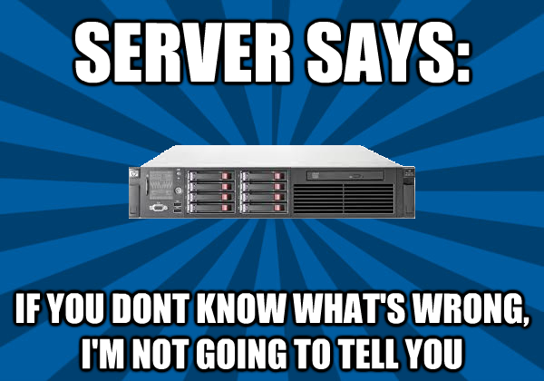

An IPMI SEL Viewing Shootout!
UPDATE (2015-02-18)
Albert Chu from FreeIPMI commented that FreeIPMI does NOT attempt to decode OEM events by default. These are events that are OEM specific, so each motherboard may require a different interpretation.
FreeIPMI has a --interpret-oem-data option and possibly in conjunction with
the -W assumesystemevent option, to attempt to decode these.
Unfortunately I no longer have the motherboard I originally ran these on. I might do a followup post with a new motherboard with similar “issues” and see how FreeIPMI compares to the other tools with these options.
Intro
Servers are like women. You are supposed to know their needs. 
{kind=link}
So how do you know what is wrong with your server when it isn’t giving you any hints? IPMI Server Event Logs (SEL).
The Problem
There are four different tools I’m going to look at that can examine the SEL. Let’s take the same server and events and run them through the tools to see how it looks. Unfairly I will also be using a vendor-specific tool, Intel SELVIEW on an Intel server.
Procedure
Check out https://github.com/solarkennedy/ipmi-sel-comparison up-to-date code on my procedure. It may get updated with more tools and output. For this blog post I’m comparing the following utilities:
Comparison
Hopefully I got it all correlated correctly. Please feel free to check my code. Let’s see some events and how each utility decodes them.
Event 88: Some sort of BIOS Update?
freeipmi: Unknown SEL Record Type: 3h
ipmitool: Version Change #0x12 |
ipmiutil: 0 4e 20 00 04 2b 12 70 00 10 ff
selview : Version Change,FW Update Status (#0x12) Informational event: FW Update Status reports BIOS Update started with version 99.99.x038. Integrated BMC - LUN#0 (Channel#0)
Freeipmi doesn’t know what to say. ipmitool at least knows there was a version change. Ipmiutil spits out the raw hex. Selview the most descriptive output, including the actual version number, with the next event reporting the version it was updated to.
Event 117: Non-critial low voltage
freeipmi: BB +1.1V STBY | Voltage | Lower Non-critical - going low ; Sensor Reading = -0.01 V ; Threshold = 0.96 V
ipmitool: Voltage #0xdd | Lower Non-critical going low
ipmiutil: MIN BMC Voltage #dd Lo Noncrit thresh act=00 thr=bf
selview : Voltage,BB +1.1V STBY (#0xDD) Warning event: BB +1.1V STBY reports the sensor is in a low, but non-critical, and going lower state. Sensor reading: -0.0122 Volts. Threshold value: 0.96381 Volts. Integrated BMC - LUN#0 (Channel#0)
Freeipmi and selview get props here for letting us know what the values of the voltage and what the threshold is. Selview gives us the most human-readable output. ipmitool and ipmiutil are not super helpful, as I don’t know what dd or bf mean.
Event 346: Bad RAM
freeipmi: POST Err Sensor | System Firmware Progress | System Firmware Error ; OEM Event Data2 code = 23h ; OEM Event Data3 code = 85h
ipmitool: System Firmware Error #0x06 | Unknown Error | Asserted
ipmiutil: MAJ EFI System Firmware #06 DIMM_B1 failed test/initialization 6f [a0 23 85]
selview : System Firmware Progress,POST Err Sensor (#0x06) Warning event: POST Err Sensor reports DIMM_B1 failed test/initialization. BIOS - LUN#0 (Channel#0)
ipmiutil and selview win here for telling me which slot is bad (DIMM_B1). ipmitool and freeipmi lose, as they do not give us this crucial piece of information.
Event 857: Server Cooling Down from overheating
freeipmi: Exit Air Temp | Temperature | Upper Critical - going high ; Sensor Reading = 73.00 C ; Threshold = 85.00 C
ipmitool: Temperature #0x2e | Upper Critical going high
ipmiutil: INF BMC Temperature #2e HiC thresh OK now act=49 thr=55
selview : Temperature,Exit Air Temp (#0x2E) CRITICAL event: Exit Air Temp reports the sensor is no longer in a critically high state. Sensor reading: 73 degrees C. Threshold value: 85 degrees C. Integrated BMC - LUN#0 (Channel#0)
Freeipmi and ipmitool are a tad misleading, as this event is the server cooling down, not heating up. ipmiutil at least says that it is now “OK”, but doesn’t give the actual temperature and threshold. Selview comes out on top with an exact description of what is happening.
Conclusion / Summary
Of course Selview, being a vendor-specific tool, gives the most accurate and detailed event information. Intel has all the special, but not proprietary, information. In many cases ipmiutil had the important information, but in an abbreviated form. In general freeipmi and ipmitool had less information in critical areas, and unable to decode some of the more esoteric events entirely. In general though, it is kinda a mixed bag. If you are serious about discovering what is wrong with your server, get all the info you can get.
Problems? Questions?
Think I used the wrong command line arguments? Think I used the wrong version? Have another command to get the SEL output? Fork my code on github and send me a pull request or make a github issue.